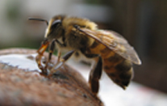Social colony
Honeybees are insects that live in a colony of tens of thousands. The nectar they collect from the plants is converted into honey which is stored in the nest for the colony to eat during the winter months.
Wild colonies live in dark cavities such as the hollow of a tree, but most honeybees are managed by beekeepers in man-made hives.
Honeybees are a ‘superorganism’ – which means that the animal is the colony of bees rather than the individual bee itself which may only live for six weeks in the summer.
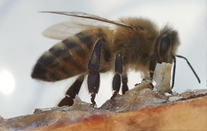The colony
The honeybee colony consists of one queen bee, thousands of female worker bees and in the summer a few hundred male drones. The queen can lay up to 2,000 eggs a day in the summer. They hatch into larvae which eats pollen from the flowers that the worker bees collect and bring back to the hive, along with the nectar for honey. After 21 days the larvae pupate and metamorphosis into adult worker bees. For the first few weeks of their lives, they perform varies tasks in the hive, such as cleaning, feeding the babies and making the wax comb. Then they go out and forage for food for the colony. In the process of collecting food, like all bees they pollinate the flowering plants and trees.
The drones don’t work. Their function is to mate with a newly born queen. The drones die after they have mated. Any drones which don’t mate are kicked out of the hive at the end of the summer by the workers.
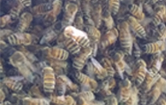Swarms
A colony produces new queens when it wants to create a new colony. It gets the old queen to lay eggs in special ‘queen cells’ and feeds them royal jelly (a protein-rich substance worker bees secret from a gland in their head). Because a colony only has one queen, the old one then has to leave when new queens are about to be born. She leaves with half the colony to find a new home. This is called swarming. It is a wonderful site to observe, but some people can find it alarming and it can be a problem if the swarm lands temporarily in an inconvenient place such as the high street. A local swarm collector should be able to help. In the old hive, the new queens emerge but only one survives. The victorious queen goes on her mating flight where she mates with a number of drones in the air and returns to the hive to lay thousands of eggs.
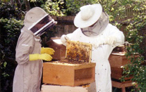The hive
The hive consists of a brood box, which contains sheets of hexagonal wax comb where pollen and nectar is stored, eggs are laid and larvae develop and the queen and her colony lives. Upstairs in the summer are super boxes full of sheets of hexagonal wax comb which the bees fill with nectar and turn into honey. At the end of summer, the beekeeper will take away some of these boxes. The amount of honey the colony produces depends on many factors such as the weather and how much nectar is available to turn into honey. During a cold, wet summer the honeybees won’t be able to forage as much as in warm, dry conditions. If the hive is near a field of rape-seed, there will be plenty of nectar for the few weeks when the rape-seed flowers but there may be nothing else all summer. In the forage is more diverse, there may be nectar sources all summer. Honeybees need a diverse but abundant source of nectar and pollen from early spring to early autumn.
Communication
Honeybee colonies have a very sophisticated form or communication, called the waggle dance that enables the forager bees to tell their sisters where an abundant source of food is located. The dance, performed in the darkness of the hive, vibrates on the wax comb and communicates the distance of the forage and where it is in relation to the position of the sun.
How you can help honeybees
Honeybees face a variety of threats from the parasitic varroa mite which weakens its host and spreads viruses, to poor nutrition and pesticides
Stronger and less stressed honeybees, are more resilient.
We can help by improving the quantity and quality of food they have to eat by making our green spaces, roofs, window boxes, hanging boxes and our trees in streets and parks more bee-friendly throughout the year.
Ditch any weed killers – let dandelions and clovers grow in the lawn to feed bees.
Ditch any chemicals that may be harmful to bees and other pollinators in the garden. Use natural, barrier methods to get rid of pests.
Provide water in a shallow bowl, saucer or pond with some stones or sticks that the bees can stand on while drinking.
Support local beekeepers by eating local honey. 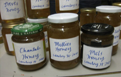
You don’t need to keep honeybees to save bees. By increasing forage and creating habitats for wild bees (see below), you will be saving many more bees than if you become a beekeeper.

Bumblebees, like all bees, are vital pollinators of wildflowers and crops. Bumblebees are key pollinators of beans, peas, raspberries and tomatoes.
There are around 250 species of bumblebee in the world, and most of these are found in the northern hemisphere - New Zealand has some which were introduced from Britain. In the UK there are 24 species of bumblebee, but only eight are commonly found in most places. These are:
· Buff-tailed bumblebee (Bombus terrestris)
· White-tailed bumblebee (Bombus lucorum)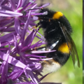
· Common carder bee (Bombus pascuorum)
· Early bumblebee (Bombus pratorum)
· Garden bumblebee (Bombus hortorum)
· Red-tailed bumblebee (Bombus lapidaries)
· Tree bumblebee (Bombus hypnorum)
· Heath bumblebee (Bombus jonellus)
Like honeybees, bumblebees are social insects and pollinate but they look and behave differently. They are a rounder shape and hairier and live in smaller colonies of up to 400 bees (usually in the ground) with one queen. They do not swarm and the colony dies out in the winter, apart from new queens.
Life cycle
In early spring the queen emerges from hibernation to start a new nest. Once she has found a suitable nest site she will rear her first batch of female workers who will feed and nurture the colony. This process is repeated throughout the summer with the queen rarely leaving the nest. Towards the end of the summer the queen produces male offspring, along with new queens. After mating the males die off, as do the old queens and workers. Only the new, fertilised queens survive to hibernate through the winter and establish their own nests the following year.
Bumblebees need suitable habitat and forage to thrive, but both have declined. As a result, two UK species have become extinct in the last 80 years and others have declined dramatically.
Habitat
Many common bumblebee species nest underground, in abandoned rodent holes, under sheds and in compost heaps, or in relatively undisturbed shaded corners in gardens. The distinctive low-flying zig zag flight of a nest-site searching queen investigating holes in the ground, or piles of leaves is seen in spring. Of those that nest above ground, some make nests in thick grass, while others, most notably B. hypnorum make nests in bird boxes, lofts and in trees. If you see lots of bees flying around the nest, these are male bees waiting for queens to come out so that they can mate. Male bees cannot sting. Bumblebee rarely nest in the same location two-years running.
How we can help
Try filling a flowerpot (more than 20cm in diameter) with a handful of old bedding material from a pet mouse or guinnae pig. Then sink the upturned flowerpot into a shallow hole in the ground and cover any drainage holes on top with a tile or piece of slate. Run a hose or pipe underground to the pot, leaving a prominent entrance to the pipe at ground level for the queen bee to find. Make drainage holes in the pipe.
Forage
Bumblebees (like all bees) need flowers that are rich in pollen to feed to their babies and high in nectar to give adults the energy to fly and forage. As we have lost 97% of our wildflower-rich grasslands since 1945 due to modern agricultural practices and, British gardens, which cover more than 1 million acres, can be a lifeline for bumblebees, but only if they are planted with bee-friendly flowers throughout the year. Yet many popular garden flowers such as pansies, begonias and pelargonium produce little pollen or nectar. Try these instead:
· Mahonia– a shrub with yellow flowers from November to March on spikey leaves provides much needed nectar and pollen to bumblebees, such as B. terrestris on warm winter and spring days. Mahonia
· Lungwort (Pulmonaria) – an early spring perennial nectar source for queen bumblebees, visited especially by the long-tongued B.pascuorum. Easy to grow in more shady spots. Lungwort
· Foxgloves (Digitalis purpura) – a tall, hardy biannual (flowers every other year) that is loved by long-tongued bumblebees such as B. hortourm (Garden bumblebee) and B.pascuorum (Common carder bee). They tolerate shade and flower in May -July and freely self - seed. Foxgloves
· Lavender – Some lavenders attract a lot more bumblebees than others due to their abundance of pollen and nectar. Lavandula angustifolia (June flowering) and Lavandula intermedia gross (July flowering) are two of the best varieties for bumblebees. Lavender
· Geranium - Not to be confused with Pelargoniums (despite garden centres selling them as such), cranesbill geraniums are hardy perennials that are long-flowering (June to September) and attractive to all bees. Try Rozanne (Winner of the RHS Plant of the Centenary at Chelsea Flower Show 2013) or Johnson’s Blue. Geranium
· Herbs - Wild Marjoram (Origanum vulgare), Mint (Mentha) and Bergamot/Bee Balm (Monarda didyma) are all good for bumblebees in late summer if allowed to flower. Herbs
Over winter
As summer turns into autumn, the old queen and her workers die and the nest ceases to operate. Only the new queens survive until the following spring. They will have flown from the nest to find a place to hibernate underground during the winter and will emerge in spring ready to find a new nesting site - maybe the upturned flower pot in your garden.
More information at the Bumblebee Conservation Trust http://bumblebeeconservation.org/
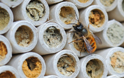Vital pollinators
Bees are vital pollinators of plants and trees which can provide fruits, nuts, and vegetables to eat.
Of around 250 species of bee found in the UK, the vast majority are solitary bees. Unlike honeybees and bumblebees, solitary bees don’t live together in colonies. A solitary female bee makes her nest alone. These wild bees are docile and safe around children and pets.
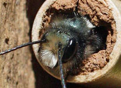Habitat
Many species of solitary bees have declined because of a lack of suitable habitat. We can help cavity-nesting solitary bees by creating bee hotels. They contain a mix of hollow tubes with diameters ranging from 6-8mm which attract the following solitary bees:
• Red Mason bee (Osmia bicornis)
• Blue Mason bee (Osmia caerulescens)
• Leaf-cutter bees, (Megachile centuncularis, M. willugbiella).
The hotels are placed in a warm, sunny, south-facing spot well above the ground. Many solitary bees may check into the same hotel, living side by side, but alone in individual tubes.
We know when a tube is populated because the end of the tube is filled with mud or masticated leaf.
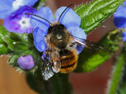What you will see
• Red Mason bees emerge in late March to April, sealing their nest with mud.
• Blue Mason bees follow in late May to late July, using finely chewed leaves to complete their nest.
• Leafcutter bees may be seen flying to the bee hotel in June, July or August carrying pieces of leaf nearly as big as themselves. Megachile centuncularis, (pictured), the most common leafcutter bee, constructs cells in the tubes from cut leaves glued together with saliva.
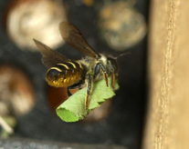Life cycle
Once the solitary bees have chosen a tube for their nest the mated female will lay a series of 7-8 eggs within the tube. She creates individual compartments (cells) for each egg. These cells will also contain pollen for the larvae to eat (once it has hatched) and a wall of mud or leaf to keep it separate from the next egg.
The developing larvea eat the pollen and after about six weeks will spin a cocoon, pupate and through metamorphosis change into a bee. This bee will spend the rest of the summer and winter in the cell waiting for next spring when it emerges to mate and continue the cycle.
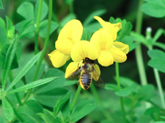Forage
Solitary bees also need good nutrition as well as a suitable home to thrive. So, we need to grow more bee-friendly flowers for pollen, nectar and the leaves to seal their nests. Try:
• Forget-me-not (Mysotis) Geraniums, wallflowers (Erisymum) green alkanet, the shrub Pieris japonica and the blossom of the horse chestnut tree for the Red Mason bee (pictured).
• Culinary herbs including rosemary, thyme, oregano, horehound (Marrubium vulgare) are good for Blue Mason bees.
• Ornamental thistles, daisy-like flowers, sweet peas, Bird’s foot trefoil (Lotus corniculatus) and St John’s Wort (Hypericum) for leafcutter bees. They particularly like to cut discs from the leaves of roses to build their cells.
Over winter
By late September all is quiet at the bee hotel. The mother bees will have died leaving their offspring in the hotel. These young bees will wait until spring to emerge. During this time we can help the bees get the best start in life by giving the hotel a clean and checking for any parasites.
On a warm, sunny spring day the bees will emerge and repopulate the hotel.
|